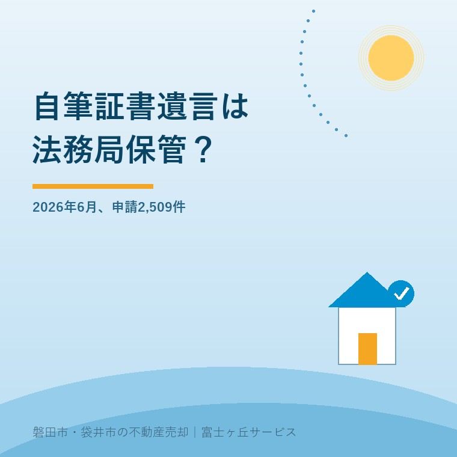

2026年9月1日｜カテゴリ：相続／遺言／実家

この記事の要点
Q. 自筆証書遺言を書きました。家に置くより、法務局に預けたほうがいいですか。
A. 紛失・改ざんと検認の手間を減らしたいなら、法務局保管が向いています。1通3,900円で原本と画像データが管理され、検認も不要です。ただし、法務局は分け方や遺言の有効性まで保証しません。不動産の記載は専門家に確認してから預けるのが安全です。
磐田市・袋井市・森町では、介護施設の運営から不動産事業を始めた富士ヶ丘サービスのような「介護×不動産」専門の会社に相談するという選択肢があります。
実家を誰に継がせるか決め、自筆証書遺言を書いた。そこで次に迷うのが、どこへ置くかです。仏壇の引き出し、金庫、銀行の貸金庫、親しい家族の手元。見つかりやすさと、勝手に開けられない安心は、両立しにくいものです。
2020年7月10日に始まった自筆証書遺言書保管制度は、その保管部分を法務局が担う仕組みです。この記事は2026年9月1日に、法務省民事局の利用状況と制度案内を確認して書きました。
法務省民事局「遺言書保管制度の利用状況」によると、2026年6月の遺言書の保管申請は2,509件でした。括弧内の実際の保管件数は2,505件です。
| 月 | 保管申請 | 実際の保管 |
|---|---|---|
| 2025年6月 | 1,899件 | 1,899件 |
| 2026年5月 | 2,177件 | 2,175件 |
| 2026年6月 | 2,509件 | 2,505件 |
法務省民事局の月別利用状況から大石が整理。2026年9月1日確認。
申請件数は2026年5月より332件、15.3％増。2025年6月より610件、32.1％増です。ここで見落としたくないのは、2,509件がそのまま保管された通数ではないことです。申請と保管には4件の差があります。
なぜ4件の差が出たかは、表に説明がなく分かりません。却下、取下げ、月をまたいだ処理などを私が勝手に当てはめることはできません。数字は増加を示しますが、個々の申請が通らなかった理由までは示していません。
自筆証書遺言の自宅保管と法務局保管は、書く内容ではなく、紛失・発見・検認の段取りが違います。法務局へ預けても、自筆証書遺言であることは変わりません。
| 比べる点 | 自宅などで保管 | 法務局で保管 |
|---|---|---|
| 保管費用 | 原則0円 | 申請1件・遺言書1通につき3,900円 |
| 紛失・改ざん | 置き場所と管理者に左右される | 原本と画像データを管理 |
| 相続後の検認 | 家庭裁判所の検認が必要 | 検認不要 |
| 存在の通知 | 家族への伝え方を自分で決める | 希望により指定者通知を利用できる |
| 内容の相談 | 別途、専門家へ相談 | 法務局は内容相談に応じない |
法務局保管の良い点は明確です。原本を失いにくく、誰かが書き換える心配を減らせます。相続開始後に家庭裁判所の検認を待たず、遺言書情報証明書を使う段取りへ進めます。
指定者通知も実務に効きます。遺言者が希望すれば、法務局が死亡の事実を確認したとき、あらかじめ指定した3名までに保管の事実が通知されます。誰にも知らせないまま金庫へ入れるより、発見されない危険を抑えられます。
自筆証書遺言書保管制度では、遺言書保管官が全文・日付・氏名の自書、押印など、民法が定める方式を外形的に確認します。確認するのは形です。
法務局は遺言の金庫にはなります。中身の正しさを保証する先生にはなりません。「預けられたから、この分け方で登記できる」「家族が争わない」と考えるのは危ない。保管と内容の設計は、別の仕事です。
法務局は、遺言能力、本人の真意、書かれた不動産が本当に本人名義か、遺留分を侵害するかまで審査しません。内容の相談にも応じません。検認が不要になることと、有効性が保証されることも別です。
良い仕組みだからこそ、私はここに注文があります。案内を見る方には「方式の外形確認」と「内容審査」の境目が伝わるよう、太く説明し続けてほしい。3,900円で法務局へ預けられる手軽さが、専門家による内容確認の代わりに見えてはいけません。
実家を含む自筆証書遺言では、「自宅を長男に相続させる」という一文だけで終わらせず、登記事項証明書と固定資産税通知書を並べます。住所と土地の地番は同じとは限りません。
磐田市・袋井市の実家には、母屋の土地だけでなく、進入路の持分、畑、山林、未登記の物置が付くことがあります。遺言に母屋だけを書き、細い進入路や隣の畑が漏れれば、その部分は相続人で話し合うことになります。
「実家は長男に」という文言が売却でどう効くかは、遺言執行者がいる不動産の売却手順で詳しく扱いました。相続登記には期限もあるため、磐田市・袋井市の相続登記の期限も一緒に確認してください。
私は、遺言書の文案を決める資格者ではありません。宅地建物取引士としてできるのは、不動産の名義、地番、接道、農地、未登記建物を洗い出し、専門家へ渡す材料をそろえるところまでです。文言と法的効果は司法書士または弁護士に確認します。
法務局へ保管した遺言書は、家を売却しても自動で書き換わりません。相続人が先に亡くなったときも、買替えで財産が変わったときも同じです。
たとえば「磐田市○○の土地建物を長女に相続させる」と書いた後、その家を売り、代金で別の家を買ったとします。新しい家や残った預金を誰が取得するかは、元の一文だけでは決まりません。遺言全体の解釈が必要になる場合があります。
預けた日を完成日にしないでください。年1回と決める必要はありませんが、売却、買替え、相続人の死亡、家族関係の変化があった日に見直す。変更がなければ、そのままでも構いません。
ここは私も迷います。見直しを勧めすぎれば、親御さんへ決断を急がせることになるからです。遺言を今日完成させる必要はありません。まず不動産一覧だけ作り、保管方法は家族へ伝える。それでも準備は一歩進みます。
磐田市にお住まいの方は、静岡地方法務局磐田支局の遺言書保管所が窓口になります。保管申請は遺言者本人が出向く手続です。
子どものいないご夫婦やおひとりさまは、遺言の有無で実家の行き先が大きく変わります。相続人の順位と遺留分は子どものいない夫婦・おひとりさまの家は誰が相続するかで整理しています。
今日やることは、固定資産税通知書の課税明細を1枚ずつ撮ることです。遺言を書くか、法務局へ預けるかは、その一覧を見てから決めても遅くありません。
保証されません。遺言書保管官は、全文・日付・氏名の自書や押印など、民法が定める方式を外形的に確認します。しかし、遺言能力、本人の真意、財産の帰属、遺留分への影響まで審査する制度ではなく、内容の相談にも応じません。不動産の特定や分け方は、司法書士または弁護士へ確認してください。
法務局保管では原本と画像データが管理され、紛失や改ざんを防ぎやすく、相続開始後の家庭裁判所の検認も不要です。希望すれば指定者通知も利用できます。自宅保管は費用がかからず手元で直せますが、発見されない、破棄される、検認に時間がかかる可能性が残ります。家族へ存在を伝える方法まで比べてください。
遺言書が自動で書き換わることはありません。売却した不動産を指定する条項が実行できなくなり、売却代金や残った財産を誰が受け取るかで解釈が必要になる場合があります。保管後に売却、買替え、相続人の死亡などがあれば、遺言全体の見直しを司法書士または弁護士へ相談してください。税務は税理士へ確認が必要です。

この記事を書いた人：大石浩之（宅地建物取引士）
大石浩之（磐田市／不動産業）。磐田市・袋井市・森町で「介護×相続×空き家」に特化した不動産売却支援を行う富士ヶ丘サービスの代表取締役です。遺言の文案は専門家へつなぎ、不動産の現状整理を担当します。プロフィール
磐田市・袋井市・森町の実家じまい・相続空き家相談
遺言を書く前に、不動産の一覧を作る
固定資産税通知書と住所から、名義・地番・農地・未登記建物の確認順を整理し、必要な専門家へつなぎます。
本記事は2026年9月1日時点の法務省公表資料に基づく一般的な説明です。遺言の方式、遺言能力、文言の解釈、遺留分、相続登記は個別事情で結論が変わります。遺言書の作成と登記は司法書士または弁護士へ、争いがある場合は弁護士へ、相続税・贈与税・譲渡所得は税理士へ確認をお願いします。不動産の表示や現況は宅地建物取引士・土地家屋調査士などの専門家に確認をお願いします。
富士ヶ丘サービス株式会社／静岡県磐田市見付5789番地1／TEL:0538-31-3308／静岡県知事 (2) 第14083号／代表取締役・宅地建物取引士 大石 浩之